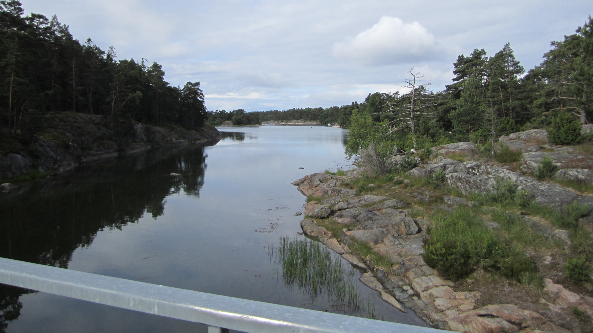

| north |
index |
A65 |
Connection from south, Estonia, towards north and Helsinki area, Finland. The strait between Porkkala peninsula and Naissaar island is the narrowest part of the Gulf of Finland and is therefore proposed for the connecting tunnel between southern Finland and north Estonia.
In Estonia the railway connects to the broad-gauge railway at Hiiu station. There are three diffrent ways to connect (a) build a standard gauge railway, (b) use a four track solution or (c) change the width from standard to broad-gauge. The best integration to Estonian railways you get by changing to broad-gauge but if Rail Baltica is built as planned the (a) option maybe prefered.
If you want to connect to air-transport at Tallinn Airport, Lennart Meri, then possibly Järve station could be upgraded for this form of connection traffic. Järve station is near Järve vanatee (would translate to, Järve old road) which connects directly to the main road of the airport.
Naissaar as a (tourist) target ? In the proposal for tunnels from Jorvas to Tabasalu, a proposed station on Naissaar, near Suursoo. Even if this proposal will get trough this station is a gamble, because today it is hard to imagine that there will be enough traffic for a stop at such a station. But new and quick communications can change this. A "Las Vegas type casino" at Naissaar, do I imagine too much ?
The name "porkkala" seems to be Estonian or Finnish and can be translated to "carrot" or "carrots". The peninsula has on the map a shape of a carrot bundle. The mainland of the peninsula is fronted to the sea by small islands as the picture below shows (at the bridge on Tullandsroad between the mainland and the islands Tullandet / Mjölandet).
